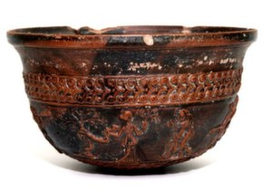
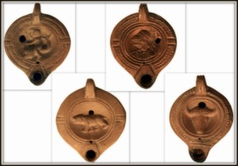

Античност
Най-ранните останки от човешка дейност в района на Благоевград се отнасят към праисторическата епоха — открити са в югозападните покрайнини на града, недалеч от квартал Струмско, върху рида Кайменска чука. Следи от ранния период на желязната епоха са намерени в местност Лозята (Баларбаши) на около 4 км северно от града. При каптирането на минералните извори са намерени монети от времето на Филип II , Александър III Македонски и от град Амфиполис. Те потвърждават съществуването на селище през елинистичната епоха, което поддържа търговски връзки със Средиземноморието. В чертите на днещният град е съществувало древното тракийско селище Скаптопара, споменато в епиграфски паметник от 238 г. Останки от трако-римската епоха са открити в кварталите Грамада и Струмско, под платното на ул.„Скаптопара" и до сградата на Професионалната гимназия по електротехника. Раннохристиянска църква и монетна находка от IV do VI в. са открити в Струмско.